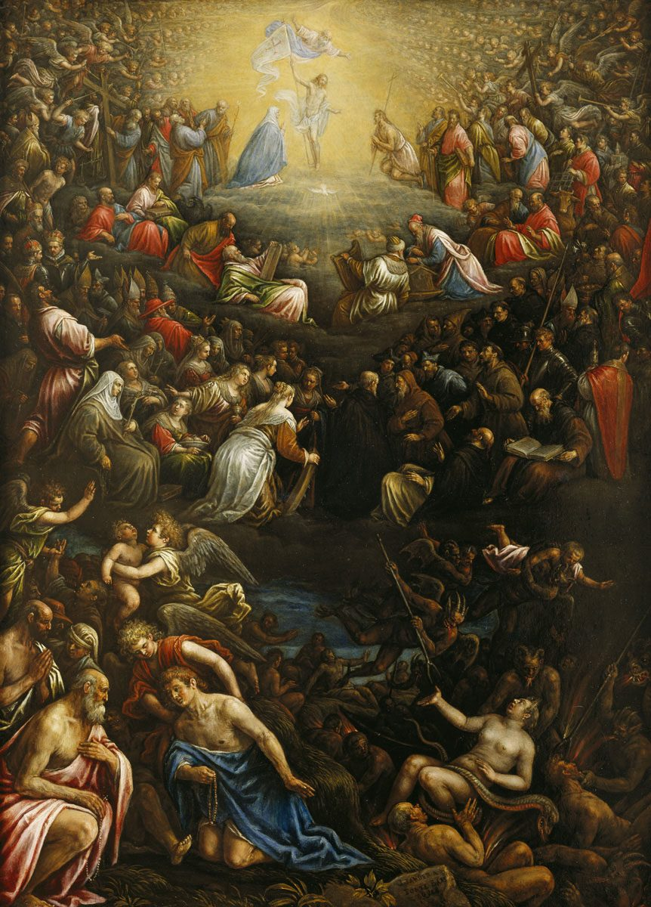

1 Corintios 6 — La Traducción Mister

El capítulo 6 dice que los santos juzgarán al mundo. El Juicio Final es la imagen habitual de esa afirmación: los santos sentados alrededor del juez, y la separación de los bienaventurados y los condenados. El cuadro no trata de los pleitos del capítulo; muestra el juicio del mundo que el capítulo da por supuesto.

«¿Se atreve alguno de ustedes?». Tolmâ, se atreve, es un verbo audaz, y prâgma échōn, teniendo un asunto, es la frase para un pleito legal en curso. Pablo usa la misma palabra para el litigio que nombra en el versículo 6. El tribunal es epì tōn adíkōn, ante los injustos, es decir, jueces incrédulos, frente a epì tōn hagíōn, ante los santos. Los santos son los miembros de la congregación, la palabra de 1:2, «llamados a ser santos». Se conserva «los santos» para que el contraste con los injustos se vea claro. La TNM 1987 dice «¿Se atreve cualquiera de ustedes que tenga un pleito contra el otro a ir al tribunal ante hombres injustos, y no ante los santos?», y la TNM 2019 dice «Si alguno de ustedes tiene un problema con otro, ¿cómo se atreven a ir a los tribunales ante hombres injustos y no ante los santos?».
«Los santos juzgarán al mundo». Hoi hagioi ton kosmon krinousin, los santos juzgarán al mundo, se afirma como un hecho sobre el futuro. El capítulo no cita de dónde viene, y los comentaristas suelen remitir a Daniel 7:22 (todavía no en estas páginas), donde se da juicio a los santos del Altísimo. La traducción no añade una razón que el texto no da. La afirmación es lo que hace que la pregunta siguiente sea un argumento: si el mundo va a ser juzgado por estas personas, pueden decidir los asuntos menores.
«Incapaces de juzgar asuntos de ínfima importancia». Anáxioi este kriterìōn elachístōn, indignos de los tribunales más pequeños. Kritḗrion es la palabra para un tribunal o un lugar de juicio, y nombra el caso tanto como el tribunal. La TNM 1987 dice «¿son ustedes incapaces de juzgar asuntos de ínfima importancia?», y la TNM 2019 «¿no son capaces de juzgar asuntos de muy poca importancia?».
«Juzgaremos a los ángeles». Angélous krinoûmen, juzgaremos a los ángeles, con mḗtige biōtiká, por no hablar de los asuntos de esta vida. El capítulo no dice qué ángeles son, y la nota registra ese silencio. El argumento va de lo mayor a lo menor: si lo mayor es de ellos, lo menor de esta vida lo es más aún.
«Quienes no cuentan nada». Tous exouthenēménous en tē ekklēsía, a los despreciados en la congregación, es la palabra para quienes son tratados como nada. Kathízete, ponen como jueces, es el verbo de sentar a un juez en su banco. Pablo pregunta si la congregación pone como jueces a quienes ella misma no estima. La TNM 1987 dice «¿es a los hombres a quienes se menosprecia en la congregación a quienes ustedes ponen por jueces?», y la TNM 2019 «¿por qué escogen como jueces a hombres a quienes la congregación menosprecia?». La traducción conserva «congregación» para ekklēsía, como exige la regla fija.
El RV 1909 dice «teniendo algo con otro», la RV60 «cuando tiene algo contra otro», y la NVI «cómo se atreve a presentar demanda ante los injustos, en vez de acudir a los creyentes». En el versículo 2 la RV60 dice «sois indignos de juzgar cosas muy pequeñas» y la NVI «casos insignificantes»; la NVI pone «los creyentes juzgarán al mundo».
«Lo digo para avergonzarlos». Pròs entropḗn hymîn légō, lo digo para avergonzarlos. Entropḗ es la vergüenza que enrojece, la que se pretende que cambie la conducta. La TNM 1987 y la TNM 2019 coinciden en el sentido: «para que se avergüencen» en la segunda y «para hacerles sentir vergüenza» en la primera.
«¿Ni un solo sabio?». Houtōs ouk éni en hymîn oudeìs sophós, ¿no hay entre ustedes ni un solo sabio? Es una pregunta que espera la respuesta no. Sophós es la palabra de quien tiene juicio para decidir, y la frase es irónica: la congregación tiene muchos miembros y reclama sabiduría, y Pablo dice que no tiene a nadie capaz de zanjar un pleito entre dos hermanos. La TNM 1987 dice «¿Es verdad que no hay entre ustedes ni un solo sabio que pueda juzgar entre sus hermanos?».
«Hermano va a juicio contra hermano». Adelphòs metà adelphoû krínetai, hermano va a juicio contra hermano, y eso ante incrédulos. La frase dice la vergüenza sin rodeos: los miembros de una misma familia están en los tribunales de los de afuera. La TNM 2019 dice «un hermano lleva a otro hermano ante el tribunal, ¡ante no creyentes!», y la 1987 «hermano va con hermano a los tribunales».
«Ya es del todo un fracaso». Hēttēma, fracaso, es el sustantivo del verbo hēttáomai, ser vencido o perder una contienda. Pablo dice que los pleitos ya son una pérdida, cualquiera que sea el veredicto. La TNM 1987 dice «significa del todo derrota para ustedes», y la TNM 2019 «Ya es un fracaso para ustedes». La traducción conserva «fracaso» para el sustantivo, porque Pablo habla del resultado de una contienda, no de una falta moral.
«¿Por qué no prefieren ser agraviados?». Dià tí ouchì mâllon adikeîsthe; dià tí ouchì mâllon apostereîsthe, ¿por qué no prefieren ser agraviados?, ¿por qué no prefieren ser defraudados? Los dos verbos están en pasiva: dejar que les hagan injusticia, dejar que los estafen. El reproche es un consejo para aceptar la pérdida antes que un pleito, y la nota registra que es un consejo y no un mandato. La TNM 2019 dice «¿No es mejor dejar que cometan injusticias contra ustedes?», y la TNM 1987 «¿Por qué no dejan más bien que les hagan injusticias?».
«Ustedes mismos agravian y defraudan». Hymeîs adikeîte kaì apostereîte, kaì toûto adelphoús, ustedes mismos agravian y defraudan, y eso a sus hermanos. El giro es la frase más dura del párrafo: la congregación no es la víctima de los tribunales, sino la que hace el daño, a sus propios miembros. La TNM 1987 dice «ustedes hacen injusticias y defraudan, y eso a sus hermanos».
En el versículo 5 la RV60 dice «Para avergonzaros lo digo» y la NVI «Digo esto para que les dé vergüenza»; la NVI añade que el sabio debe juzgar «un pleito entre creyentes». En el versículo 6 la RV60 dice «el hermano con el hermano pleitea en juicio» y la NVI «un hermano demanda a otro». En el versículo 7 la RV60 dice «es ya una falta en vosotros» y la NVI «ya es una grave falla»; la RV60 tiene «sufrís más bien el agravio», y la NVI «soportar la injusticia». En el versículo 8 la RV60 dice «cometéis el agravio, y defraudáis», la NVI «son ustedes los que defraudan y cometen injusticias».
«No se engañen». Mḕ planâsthe, no se engañen, es una advertencia, y la pregunta anterior, ḗ ouk oídate, ¿o no saben?, ya apareció en los versículos 2 y 3. La herencia del basileía toû theoû, el reino de Dios (basileia), es la condición de herederos de los corintios, y es la prueba: quienes hacen lo de la lista no lo heredarán. La TNM 2019 dice «No se engañen».
«Los afeminados». Malakoí, de la palabra para blando, es una palabra que el estante inglés traduce de varias maneras. En griego se usa de la comodidad y la blandura, y el sentido de la palabra en esta lista es debatido entre los estudiosos. La traducción conserva «afeminados», la lectura de la KJV y de la ASV, y registra que la palabra se ha leído de varias maneras. La TNM 2019 dice «los hombres que se someten a actos homosexuales» para esta palabra.
«Los que se acuestan con hombres». Arsenokoítai, compuesto de arsḗn, varón, y koítē, lecho, es la palabra rara de la lista, y ya tiene su entrada en la biblioteca (arsenokoitēs). El compuesto aparece también en 1 Timoteo 1:10. El griego de Levítico 18:22, en el Antiguo Testamento griego, usa la frase «el lecho de una mujer» para el mismo acto, y el compuesto parece tomar esa frase. El sentido de la palabra, y si nombra un papel o una práctica general, es debatido en los estudios, y esta traducción registra las lecturas sin votar. La TNM 1987 dice «ni hombres que se acuestan con hombres», y la TNM 2019 «los hombres que practican la homosexualidad».
«Ladrones, codiciosos, borrachos, injuriadores, extorsionadores». La lista del versículo 10 es la de 5:11, usada aquí como prueba para el reino, con dos cambios: no se vuelve a nombrar a los fornicadores ni a los idólatras, y se añade kleptai, ladrones. Los codiciosos (pleonéktai), los borrachos, los injuriadores (loídoroi) y los extorsionadores (hárpages, harpax) ya estaban en la lista anterior. La TNM 2019 dice «los ladrones, los codiciosos, los borrachos, los injuriadores y los extorsionadores».
«Y eso eran algunos de ustedes». El verbo ḗte, eran, está en pasado, y la frase convierte la lista en un recuerdo: algunos de la congregación venían de esas vidas. Luego tres verbos en pasiva marcan el cambio: apelousásthe, fueron lavados; hēgiásthēte, fueron santificados; edikaiṓthēte, fueron declarados justos (dikaioō). El verbo de lavar está en voz media, es decir, «se lavaron ustedes mismos», y los otros dos en pasiva; la traducción conserva los tres como están. La TNM 2019 dice «pero ustedes han sido lavados, han sido santificados, han sido declarados justos».
En el versículo 9 la RV60 dice «ni los afeminados, ni los que se echan con varones», la NVI dice «ni los sodomitas, ni los homosexuales». En el versículo 10 la RV60 dice «ni los estafadores heredarán», y la NVI «los calumniadores, ni los estafadores». En el versículo 11 la RV60 dice «ya habéis sido lavados», y la NVI «Pero ya han sido lavados, santificados y justificados».
«Todo me es lícito». Pánta moi éxestin, todo me es lícito, es un eslogan, y Pablo lo cita dos veces, cada vez seguido de una corrección. El verbo éxestin es la palabra para lo que está permitido. La primera corrección es sympherei, conviene, que significa ayudar o aprovechar, una palabra de beneficio. La TNM 1987 dice «Todas las cosas me son lícitas; pero no todas las cosas son ventajosas», y la TNM 2019 «Todo me está permitido, pero no todo es beneficioso».
«Dominar por nada». La segunda corrección es exousiasthḗsomai, me dejaré dominar. La palabra viene de exousía, autoridad, y nombra el estado de quien está bajo el mando de otro. La TNM 1987 dice «no me dejaré poner bajo autoridad por cosa alguna». El griego es una afirmación sobre la libertad, y el capítulo la gira en el versículo 13: la libertad es para el Señor.
«Los alimentos son para el vientre». Tà brṓmata tē koilía, los alimentos son para el vientre, y el vientre para los alimentos, es el segundo eslogan, que Pablo no discute, pero limita: ho dè theòs kaì taútēn kaì taûta katargḗsei, Dios reducirá a nada a los dos. Katargeō, reducir a nada, es el verbo de dejar algo sin efecto. La TNM 1987 dice «Dios los reducirá a nada», y la TNM 2019 «Dios acabará con los dos».
«El cuerpo es para el Señor». Tò dè sôma ou têi porneíai allà tôi kyríōi, el cuerpo no es para la fornicación, sino para el Señor, y el Señor para el cuerpo. La palabra sôma, cuerpo, es la persona entera, no solo la carne, y pertenece al Señor, que a su vez es para él. La reciprocidad es el punto. La TNM 2019 dice «El cuerpo no es para la inmoralidad sexual, sino para el Señor, y el Señor es para el cuerpo».
«Dios resucitó al Señor». Ho dè theòs kaì tòn kýrion ḗgeiren kaì hēmâs exegereî dià tês dynámeōs autoû: Dios resucitó al Señor y nos resucitará por su poder. El poder es dýnamis (dynamis), la palabra de 5:4, donde el poder del Señor acompaña a la asamblea. Aquí es el poder que resucitará a los creyentes, y el versículo prepara el argumento del capítulo 15. La TNM 2019 dice «Dios resucitó al Señor y también nos levantará a nosotros de entre los muertos con su poder».
En el versículo 12 la RV60 dice «no todas convienen» y «yo no me dejaré dominar de ninguna»; la NVI «pero no todo es para mi bien» y «pero no dejaré que nada me domine». En el versículo 13 la RV60 dice «pero tanto al uno como a las otras destruirá Dios», y la NVI «Dios los destruirá a ambos». En el versículo 14 la NVI dice «Con su poder Dios resucitó al Señor».
«Sus cuerpos son miembros de Cristo». Tà sṓmata hymôn mélē Christoû estin, sus cuerpos son miembros de Cristo: mélē, miembros, son los miembros de un solo cuerpo, y la imagen es la de un miembro tomado del cuerpo de Cristo. El argumento de Pablo depende de esa imagen. La TNM 1987 dice «¿No saben que sus cuerpos son miembros de Cristo?».
«Una prostituta». Pornēs, de una prostituta, es la raíz de porneia, inmoralidad sexual. Es la palabra simple para una mujer que vende sexo. La TNM 2019 dice «una prostituta». La traducción conserva «prostituta», porque es la lectura que un lector de hoy entiende sin glosa.
«¡De ningún modo!». Mḕ génoito, que nunca suceda. Es la negativa más enfática de Pablo, y la TNM 1987 dice «¡Jamás suceda eso!» y la TNM 2019 «¡Claro que no!».
«Los dos serán una sola carne». Éssontai gár, phēsín, hoi dyo eis sárka mían, porque, dice, los dos serán una sola carne: la cita es de Génesis 2:24, el versículo que hace de la unión de un hombre y una mujer el origen de la una carne. Pablo aplica el patrón a la unión sexual con una prostituta, y en el versículo 17 pone junto a ella la unión con el Señor en la misma gramática. La TNM 1987 dice «Porque: “Los dos —dice él— serán una sola carne”».
«Un solo espíritu». Ho dè kollōmenos tôi kyríōi hén pneûmá estin, el que se une al Señor es un solo espíritu. El verbo kollaō, pegarse a, es el mismo del versículo 16, así que el que se une a una prostituta forma un solo cuerpo, y el que se une al Señor forma un solo espíritu. El paralelo es exacto. La TNM 2019 dice «llega a ser un solo espíritu con él».
En el versículo 15 la RV60 dice «miembros de una ramera», y la NVI «para unirlos con una prostituta». En el versículo 16 la RV60 dice «Porque dice: Los dos serán una sola carne», y la NVI «Los dos llegarán a ser uno solo». En el versículo 17 la RV60 dice «un espíritu es con él», y la NVI «se hace uno con él en espíritu».
«Huyan de la inmoralidad sexual». Pheúgete tḕn porneían, huyan de la inmoralidad sexual: el mandato es un solo imperativo, y porneia es la palabra general que Pablo usó del hombre de 5:1. La TNM 2019 dice «¡Huyan de la inmoralidad sexual!».
«Fuera del cuerpo». Pān hamártēma hó eàn poiḗsēi ánthrōpos ektòs toû sṓmatós estin, todo pecado que el hombre cometa está fuera del cuerpo, pero el que practica la inmoralidad peca contra su propio cuerpo. La frase es una afirmación sobre el cuerpo, y la nota registra el contraste que traza el griego: el pecado cometido ektòs, fuera del cuerpo, y el de pornéuōn eis tò ídion sôma, el que se comete contra el cuerpo mismo. Los comentaristas discuten si la frase se toma de forma literal para todo otro pecado. La traducción dice lo que dice el griego y no resuelve la cuestión.
«Templo del espíritu santo». Naós, templo, es el santuario mismo, el edificio interior donde está Dios, no los atrios que lo rodean (naos). La imagen viene de 3:16, donde la congregación era el templo de Dios. Aquí es el cuerpo único. La TNM 1987 dice «el cuerpo que ustedes son es [el] templo del espíritu santo», y la TNM 2019 «el cuerpo de ustedes es el templo del espíritu santo, que está en ustedes».
«Comprados a precio». Ēgorásthēte gàr timês, porque fueron comprados a precio: el verbo agorazō es el de comprar en el mercado, y el precio se nombra en general, sin cifra. La TNM 1987 dice «porque fueron comprados por precio». El remate, doxásate dḕ tòn theòn en tōi sṓmati hymôn, glorifiquen, pues, a Dios en su cuerpo, es el mandato que el capítulo ha ido construyendo.
«Y en su espíritu, que son de Dios». La KJV, en inglés, termina el versículo 20 con esa cláusula, que está en el Textus Receptus y no en el texto crítico que esta traducción lee. La traducción conserva solo las palabras que imprime el texto crítico, y registra la cláusula aquí.
Para el versículo 18, la RV60 dice «Huid de la fornicación», y la NVI «Huyan de la inmoralidad sexual». En el versículo 19 la RV60 y la NVI dicen «templo del Espíritu Santo». En el versículo 20 la RV60 y el RV 1909 imprimen la cláusula «y en vuestro espíritu, los cuales son de Dios», como la KJV, que el texto crítico no imprime; la NVI dice «glorifiquen con su cuerpo a Dios».
Patrones que vale la pena recordar
Donde esta traducción conserva las palabras exactas: «santos» para hagioi en 6:1–2, la palabra de 1:2; «fracaso» para hēttema en 6:7; «conviene» para sympherei en 6:12; «templo» para naos en 6:19, la palabra de 3:16; «comprados a precio» para ēgorasthēte; «prostituta» para pornē; «miembros» para melē.
Ecos pagados. El juicio de 4:3–5 y 5:12–13, ahora vuelto a los santos que juzgarán al mundo (6:2); la lista de 5:11, repetida aquí como prueba del reino (6:9–10); el templo de 3:16, ahora el cuerpo único (6:19); el poder de 5:4, que resucita a los creyentes en 6:14; y la congregación que pone como jueces a los suyos, con el sabio que 6:5 dice que falta en ella.
Ecos sembrados. Los alimentos para el vientre, un eslogan que Pablo volverá a limitar cuando trate la carne ofrecida a los ídolos en los capítulos 8 a 10. El cuerpo para el Señor, y la pertenencia del cuerpo a otro, que el capítulo 7 trata como cuestión de matrimonio. Dios nos resucita por su poder (6:14), que el capítulo 15 toma como argumento de la resurrección.
Próxima entrega: 1 Corintios 7, ya en estas páginas. Pablo pasa del cuerpo al matrimonio, y responde a preguntas que los corintios le escribieron.